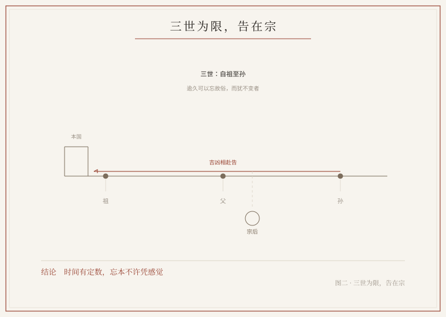

曲礼下 · 二·十二 · 第 135 课
去国已历三世，若本国之君仍不绝其祖祀、为其立后，吉凶之事仍相赴告，则凡有吉凶，仍要反告于宗子。
说什么事：去国三世，爵禄有列于朝，出入有诏于国。若兄弟宗族犹存，则反告于宗后。
落在哪一层：礼。论「三世」这条时间线，与「有列无列」这条关系线。
为何编在此位：上节说不求变俗，此节立刻给「俗」加一个期限：三世。时间一到，变与不变，要看恩义还在不在。
【经】去國三世，爵祿有列於朝，出入有詔於國。若兄弟宗族猶存，則反告於宗後。
【注】三世，自祖至孫。逾久可以忘故俗，而猶不變者，爵祿有列於朝，謂君不絕其祖祀，復立其族，若臧紇奔邾，立臧為矣。詔，告也，謂與卿大夫吉凶往來相赴告。謂無列無詔者。反告亦謂吉凶也。宗後，宗子也。
【疏】「去国三世」，谓三谏不从，及他事碍被黜，出入新国已经三世者，则郑注云「三世，自祖至孙」也。去已三世，而本国之君犹为立后不绝，则若有吉凶之事，当与本国卿大夫往来出入，共相赴告。
去国 离本国而他往。与「去国三世」并看，知非暂出。
三世 注「自祖至孙」。疏引卢、王云「世，岁也，万物以岁为世」，然郑义以世代为断。
爵禄有列于朝 注「谓君不绝其祖祀，复立其族」。列者，位也，非必身在其位。
出入有诏于国 诏，告也。注「与卿大夫吉凶往来相赴告」。
兄弟宗族犹存 疏「谓本国之亲」。此为「无列无诏」者的另一线。
反告于宗后 宗后即宗子，大宗之后。反告者，告于宗，非告于国。
离国已三代，若本国仍为你留着爵禄之位、吉凶之事仍相赴告，那么凡有吉凶，仍要回告本族的宗子。
「三世」是一条界线。逾三世，俗可以忘；未逾三世，或虽逾而恩义犹在，则俗不可忘。此节把「变不变俗」从意愿问题，改成了关系问题。
第一层 时间有定数 三世自祖至孙。礼不肯让「忘本」变成一件凭感觉的事，故给它一个可数的期限。
第二层 有列则犹在 爵禄有列，说明君未绝其祀。人在外，位仍在——这是先秦封建关系里最实的一种牵连。
第三层 诏与告 出入有诏，是双向的。吉凶相赴告，等于还在一张网里。礼所重者，不是形式上的问候，是凶事时的那一趟奔走。
第四层 反告宗后 即使朝中无列、国中无诏，只要宗族兄弟尚存，仍要反告宗子。国可以断，宗不可断。
与今日何干 离乡的人，红白事回不回去，是同一道题。三世而后断，是古人的宽限；断与不断，看那条线还在不在。
| 左 | 右 |
|---|---|
| 去国三世 | 自祖至孙，三世为限 |
| 爵禄有列于朝 | 君不绝其祀，复立其族 |
| 出入有诏于国 | 吉凶相赴告，双向 |
| 兄弟宗族犹存 | 本国之亲尚在 |
| 则反告于宗后 | 告于宗子，非告于国 |
| 逾久可以忘故俗 | 犹不变者，以恩义未绝 |
画一条横轴，轴上均匀排三枚小方点，代表祖、父、孙三代，点下各一道短竖线；轴左端画一座小小的门形轮廓（本国），右端一道竖线为界。自第三代那点向左引一道细长的回向箭头，箭头止于门的门槛内；箭头中途另分出一支，折向轴下的一枚小圆（宗子之位）。轴上方以极淡的点线标出三段的长度。不写文字。赭色只用在回向箭头上。
